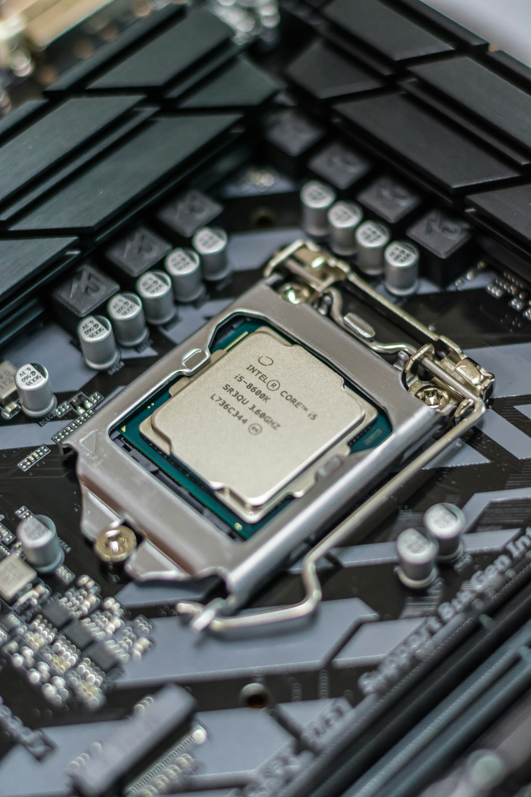
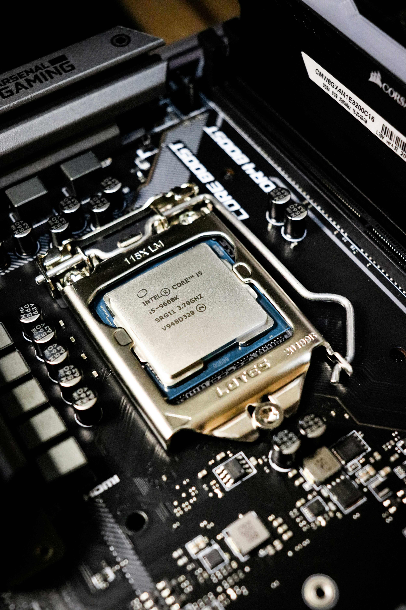
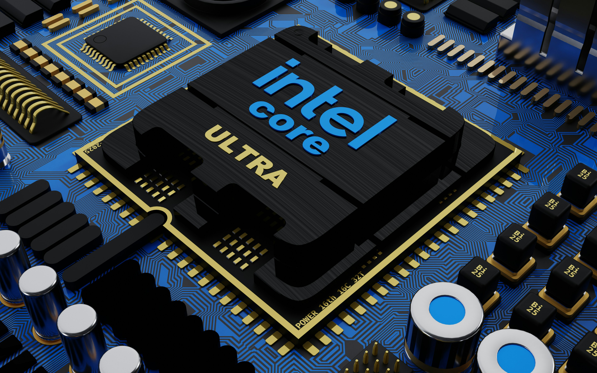
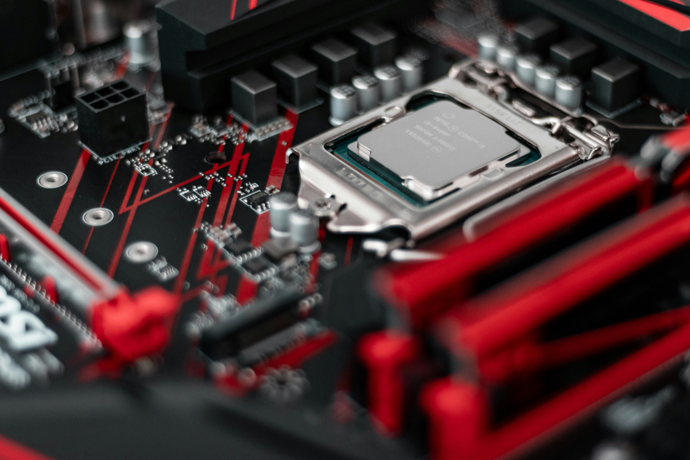

A timeline of progress
Sustainability through the ages
Every milestone adds momentum to the work still ahead.
1968
Intel Founded

Intel is founded to advance semiconductor innovation.
1971
First Microprocessor

Intel launches the world's first commercial microprocessor.
1978
8086 Processor

The 8086 processor establishes Intel's x86 architecture.
1985
386 Processor

The 386 brings 32-bit performance to personal computers.
2006
Peak GHG Emissions

Intel reaches its highest annual operational greenhouse gas emissions.
2020
RISE Strategy

Intel launches its RISE strategy and 2030 sustainability goals.
2022
Net-Zero By 2040

Intel commits to net-zero Scope 1 and 2 emissions by 2040.
2023
Renewable Electricity

Intel reaches 99% renewable electricity worldwide.
2024
Sustainability Summit

Intel brings industry leaders together for its first Sustainability Summit.
2040
Net-Zero Operations

Intel targets net-zero greenhouse gas emissions across global operations.